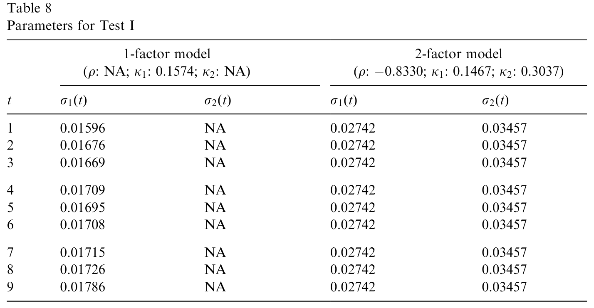
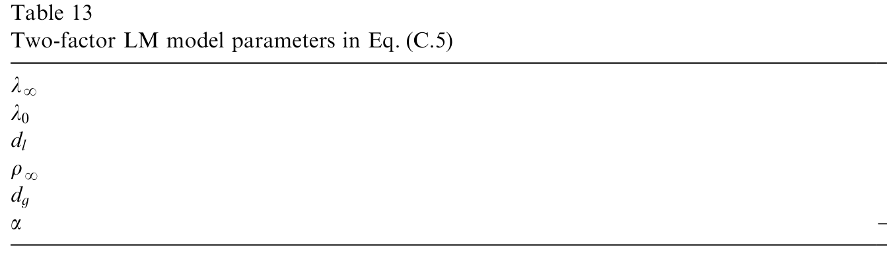
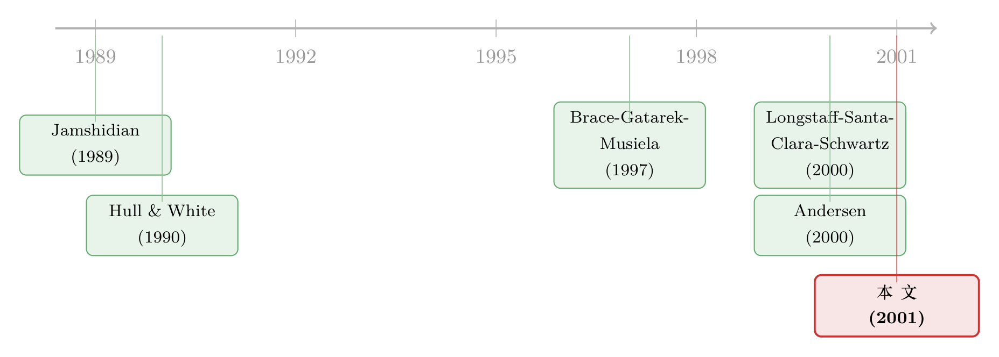

多一个因子，百慕大期权就更值钱吗？——一场关于「校准」的祛魅
本文读的是 Andersen & Andreasen (2001, Journal of Financial Economics)：华尔街习惯用「不断重新校准的单因子模型」给百慕大互换期权 (Bermudan swaption) 定价，一直被批评说这会因为忽略利率的多因子结构而损失数十亿美元。两位作者却发现——只要校准做得足够「全」（不只盯着核心互换期权，还纳入利率上限 cap），把模型从一因子加到两因子，期权价格只是温和地变动、而且通常还会略微下降；用单因子模型反推的行权策略放进两因子世界里，损失也小到可以忽略。换句话说，「因子依赖」更多是一个校准问题，而不是一个因子个数问题。
1 一桩「数十亿美元」的公案
先把场景摆出来。百慕大互换期权是固定收益市场里交易最活跃的衍生品之一：它给持有人一个权利，在一串预定的日期里任选一天进场，签下一笔固定换浮动的利率互换。它的麻烦之处，全在那个「任选一天」——这是个提前行权 (early exercise) 的美式特征，定价必须沿着利率树/网格做逆向归纳。
为了把这个提前行权算得又快又稳，华尔街的做法相当朴素：用一个单因子的马尔可夫模型（比如 Hull-White (1990) 或 Black-Derman-Toy (1990)），每天重新校准到当天的 cap 和欧式互换期权市场价。Duffie (1996) 专门讨论过这种「天天对表」的校准实践。
可常识告诉我们，单因子模型不可能是现实的全貌：收益率曲线明明被不止一个因子驱动。于是两个问题自然浮出水面，作者在引言里把它们写得清清楚楚：
(a) 华尔街的从业者，到底有没有把百慕大期权估对价？ (b) 百慕大期权的持有人，会不会因为用了单因子模型隐含的行权策略，而亏掉大笔钱？
在这篇论文之前，已经有人给出了一个相当吓人的答案。Longstaff, Santa-Clara & Schwartz（下称 LSS, 2000）那篇标题就叫《Throwing away a billion dollars》的论文发现：如果把一个只用「互换内在价值」参数化的简单行权策略，换成一个允许依赖更多曲线状态信息的复杂策略，模型给出的期权价值会上升，幅度大约在 1–3%。由此 LSS 推断，那些守着单因子行权策略的持有人，正在白白损失「以整个市场计的数十亿美元」。
故事到这里，张力就有了：单因子模型，真的是一个数十亿美元的错误吗？
2 一个看似无懈可击的直觉
要理解这场争论，得先建立一个直觉——而且是一个听上去无比正确、最后却被推翻的直觉。
作者引入了一个很妙的概念：百慕大期权的「核心利率」(core rates)。一个 \(T_e\) noncall \(T_s\) 的标准百慕大期权，持有人能在 \(T_s, T_{s+1}, \dots, T_{e-1}\) 这些日子里任选一天，进场签一笔到 \(T_e\) 结束的互换。那么这些「可以被换入的互换」的远期票面收益率 \(\{y_{s,e}, y_{s+1,e}, \dots, y_{e-1,e}\}\)，就是核心利率。
为什么这个概念重要？因为百慕大期权本质上是一份写在这组核心利率上的复杂「择优期权」(chooser option)：你站在每个行权日，比较「现在进场」和「再等等」，本质上是在这一组利率里挑一个对自己最有利的时点。
而对一份择优期权来说，标的之间的相关性至关重要。如果把这些核心利率「去相关化」(de-correlate)——比如从单因子模型（核心利率被同一个因子驱动，几乎完美正相关）走向两因子模型——那么这组利率彼此之间的离散程度会变大，择优期权的赔付波动也会变大，于是它的价值应该上升。
这就是那个看上去无懈可击的直觉：因子越多 → 相关性越低 → 百慕大期权越值钱。 它甚至和 LSS「单因子吃亏」的结论严丝合缝。
接着，一个自然的问题是：既然如此，作者凭什么说价格「几乎不变、甚至略降」？
3 真正关键的一步：校准里藏着的「松弛」
反转，出现在「校准」这两个字上。
作者在第 3 节做了一件很漂亮的事：他们故意构造一个有缺陷的模型，来暴露问题的本质。设想我们给每一个核心互换期权配上一个专属的、不随时间变化的收益率波动率：
$$\sigma(t,T_s,T_e) \equiv \sigma(T_s,T_e)$$
也就是 Eq.(8)——右端与日历时间 \(t\) 无关，直接等于该期权初始的隐含波动率。把模型校准到核心互换期权价格，无非就是挑这些常数波动率去匹配时点零的市场价。
注意这里的陷阱：一旦这样校准完成，核心利率之间的相关性矩阵可以任意设定，却完全不影响对欧式期权价格的拟合。改相关性不会改变单个核心利率的边际分布，但它会改变这组利率彼此的离散度。在这个（有缺陷的）框架里，去相关化就纯粹地抬高了百慕大期权的价值——直觉在这里成立。
但问题恰恰在于：这个模型只校准到了核心互换期权，没校准到别的任何东西。那它对「非核心」工具的定价会怎样？
为了把这件事算清楚，作者退到一个更干净的设定：用连续复利的远期零息利率 \(Y(t,T_i,T_j)\)，并假设它们服从高斯分布以避开水平依赖。给定一个常数相关性假设 \(\mathrm{corr}(dY(t,T_i,T_m), dY(t,T_j,T_n)) = r\)，利用零息利率之间天然的可加关系，可以推出一条递归式——这正是全文的题眼：
$$u(t,T_i,T_m)^2 (T_m - T_i)^2 = u(t,T_i,T_{i+1})^2 d^2 + u(t,T_{i+1},T_m)^2 (T_m - T_{i+1})^2 + 2\,r\,d\,u(t,T_i,T_{i+1})\,u(t,T_{i+1},T_m)(T_m - T_{i+1})$$
这就是 Eq.(12)。它说的是：一个跨度更长的利率的瞬时波动率 \(u(t,T_i,T_m)\)，是由两段短利率的波动率、加上一项带着相关性 \(r\) 的交叉项拼出来的。于是结论立刻浮现：当我们调低相关性 \(r\)，非核心利率的波动率就会上升。 作者用一个 \(u(t,T_i,T_e)=0.01\)、\(T_e=4\)、\(d=1\) 的小例子把这件事量了出来：当 \(r\) 从 0.99 降到 0.5，\(u(t,1,3)\) 从 0.01003 升到 0.01186，\(u(t,1,2)\) 从 0.01007 一路升到 0.01435。如果你在这些非核心利率上写了一份两年期的 cap，它的价格就会随着利率去相关化而水涨船高。
然后，真正关键的一步来了。既然非核心利率的波动率会乱跑，我们很自然地想：那就把 cap、把非核心互换期权也塞进校准集，把模型「绑紧」不就行了？
可在这个非平稳的设定里，这件事根本做不到。作者继续推导：要让一份写在 \(Y(T_i,T_i,T_{i+1})\) 上的 caplet 也校准住，就得同时匹配它的时点零期限方差。把这个约束写出来（Eq.(13)），里面那些花括号里的项是核心利率的期限方差，必须保持不变才能让模型留在校准里。于是当相关性 \(r\) 上升（比如从两因子退回单因子），为了让等式继续成立，未来的期限方差
$$\int_{T_i}^{T_{i+1}} u(t,T_{i+1},T_e)^2 \, dt$$
就必须增大；而为了让 \(Y(\cdot,T_{i+1},T_e)\) 的总期限波动率保持不变，那个「部分」期限方差
$$\int_0^{T_i} u(t,T_{i+1},T_e)^2 \, dt$$
就必须减小。可在 Eq.(8) 这种非平稳模型里，\(u(t,T_{i+1},T_e)\) 压根不是 \(t\) 的函数——它是个常数。让一个常数同时「未来变大、过去变小」，显然不可能。校准到 caplet，于是宣告失败。
这两段推导把全文的核心论点钉死了：
- 只校准到核心互换期权的模型是「欠定」的：非核心工具的价格强烈依赖于你随手设的相关性结构；
- 一旦你把 cap 这类非核心工具也纳入校准来「绑紧」模型，相关性的变化就会被迫转嫁成核心利率波动率随时间演化的变化。
第 2 点才是杀手锏。它意味着：那个「去相关化 → 百慕大更值钱」的直觉，默认了你可以一边改相关性、一边让所有波动率纹丝不动。而现实里只要校准做得够全，这个自由度就被堵死了——相关性带来的离散度上升，会被波动率期限结构里被迫发生的反向调整给抵消掉。这，就是为什么价格「几乎不变、甚至略降」。
（关于「收益率曲线拟合得再漂亮、也可能对波动率充耳不闻」这条平行的教训，可参见《波动率到底藏在哪里？》与《收益率曲线拟合得再好，也可能对波动率「充耳不闻」》。)
4 高斯模型：把直觉放进一个能算的框架
讲清了机理，作者用一个真正能定价的模型来落地。第 4 节用的是高斯马尔可夫模型，短期利率写成
$$r(t) = a(t) + x_1(t) + x_2(t)$$
其中 \(a(t)\) 是一个确定性的时间函数，用来精确匹配初始收益率曲线；\(x_1, x_2\) 是两个相关的 Ornstein-Uhlenbeck 过程：
$$dx_i(t) = -k_i(t)\,x_i(t)\,dt + \sigma_i(t)\,dW_i(t), \quad i=1,2,$$ $$dW_1(t)\,dW_2(t) = \rho(t)\,dt$$
作者证明：任何无套利的、高斯利率的两因子马尔可夫模型都能写成这个样子。把这个核心方程拆开看：
这里有一个极其关键、却容易被忽略的观察：作者在附录 A 中证明，模型隐含的瞬时远期利率之间的相关性，只依赖于三个量 \((\rho,\; k_2 - k_1,\; \sigma_2/\sigma_1)\)。换句话说，只要把这三个量固定为常数，远期利率的相关性结构就是时间平稳的 (time-stationary)；而且——
如果按这种方式固定相关性结构，那么两因子模型并不比单因子模型多出任何可自由调节的参数。这一点是整篇论文做「公平比较」的前提：两个模型被绑在同一组 cap 和欧式互换期权价格上，谁也没有偷偷多藏自由度。
实验设计也透着两位作者的谨慎。他们要价的是终值 \(T_e=10\) 年的百慕大期权，于是把模型在最小二乘意义上尽量贴合到两类工具上：(i) 九个 ATM 欧式互换期权，终值都是 10 年、期权期限从 1 年到 9 年逐年递增；(ii) 终值 10 年、首次定息时点从 1 到 9 年的远期起始 ATM cap。特意把 cap 放进校准集，正是为了不让非核心利率的波动率被相关性牵着鼻子走——这与第 3 节的教训一脉相承。
他们还做了一件让人信服的事：把测试对称化。先用时间平稳的两因子模型给百慕大期权定价、再让单因子模型去贴它（Test I）；然后反过来，用时间平稳的单因子模型定价、再让两因子模型去贴它（Test II）。两个方向用同一套校准工具，就是为了避免「非平稳性」偷偷主导结论。所有测试都用半年结构（\(d=0.5\)）、初始曲线在 6% 处持平，单因子用 50 步时间×50 步空间的 Crank-Nicolson 网格，两因子用 50×50×50 的 ADI 有限差分网格。

Table 8: shows the parameters for the Gaussian one- and two-factor models
5 结果：直觉「输」给了校准
把这一切跑出来，结论与那个朴素直觉正好相反。
无论是高斯模型还是对数正态的 Libor 市场 (LM) 模型，标准百慕大期权对「驱动收益率曲线的因子个数」都几乎不敏感；更出人意料的是，随着因子数从 1 增到 2，模型价格还会略微下降。作者用了相当篇幅来解释这个「somewhat surprising」的结果——其根源正是第 3 节那条：相关性下降带来的离散度增益，被全面校准所迫使的波动率期限结构调整给抵消、甚至反超了。
至于问题 (b)——用单因子行权策略会不会亏大钱——作者没有去做那套极其耗时的「逐路径重新校准」的全套模拟，而是给了一个上界：他们把一个只在初始时刻校准到两因子模型的单因子模型的行权边界，硬塞进两因子世界里去执行，看百慕大溢价掉了多少。这显然高估了真实损失（因为现实里用户会不断重新校准），可即便如此，损失依然小且通常不显著。
这个「小」要放进一个尺子里才有意义。作者特意提醒：百慕大期权的买卖价差通常至少是欧式互换期权的两倍；美国市场上欧式互换期权的买卖价差在隐含波动率上约 0.5%，换算成典型百慕大期权的价格价差，大约是 5–10%。而 LSS 声称的那 1–3% 的「因子损失」，恰好落在校准精度和买卖价差之内。一个比交易摩擦还小的数字，很难称得上是「扔掉了数十亿美元」。
作者还顺手揭示了一个有趣的事实：损失的大小，取决于你具体用哪种方式把单因子行权策略「翻译」进两因子世界。提取行权信息的方法不止一种，有些方法的误差明显低于另一些——这本身就说明，把 LSS 那个单一的、完全在多因子模型内计算的赔付型策略当作「所有单因子策略的代表」，是站不住脚的。
作者在 LM 模型一节（第 5 节）重做了高斯模型的部分实验，确认这套定性结论不是高斯模型独有的。两类模型隐含了截然不同的隐含波动率「偏斜」(skew)，结论却一致，这让「对波动率偏斜稳健」这一点也有了着落。

Table 13: shows the choice of parameters in the two-factor specification
6 文献脉络
把这条线索捋一遍，故事会更清楚。
最早，利率衍生品定价是在单因子、易于实现的框架里起步的：Hull & White (1990) 的扩展 Vasicek、Black, Derman & Toy (1990) 的对数正态短期利率模型，都是为了把美式/百慕大特征塞进一个可做逆向归纳的低维网格。Jamshidian (1989) 那个「精确债券期权定价公式」更是让单因子模型里的欧式互换期权有了解析处理（本文给两因子欧式互换期权定价时，正是靠对其中一个高斯变量取条件、再沿另一个变量做一维数值积分，用的就是 Jamshidian 1989 的结果）。

接着，市场模型登场。Brace, Gatarek & Musiela (1997) 与 Jamshidian (1997) 奠定了 Libor/swap 市场模型，让人可以直接对可观测的市场利率建模，但也把定价推进了高维的蒙特卡洛世界——百慕大期权在其中如何定价，是 Andersen (2000) 解决的（本文 LM 模型部分正是建在 Andersen & Andreasen (2000) 与 Andersen (2000) 之上）。
然后，一个自然的问题浮出水面：因子个数到底要不要紧？此前讨论百慕大期权的工作（Andersen 2000；Clewlow & Strickland 1998；Heath, Jarrow & Morton 1990；Pedersen 1999）几乎都在打磨数值算法，而不是比较不同因子数的模型。真正把矛头指向「因子依赖」的，是 LSS (2000)——他们的结论是「单因子吃大亏」。本文正是站在这个争论的对面：它不去比较两个特定的行权策略，而是回到校准这个被 LSS 略过的环节，论证只要校准足够全面，因子个数对百慕大定价几乎无关紧要。Carverhill (1995)、Hull & White (1995) 关于「控制利率模型平稳性」的讨论，则为本文「让模型尽量时间平稳」的执念提供了底色。
评论与延伸（Q&A + 研究方向）
(a) 几个可能的疑问
Q：这篇论文和 LSS (2000) 到底分歧在哪？是谁错了吗？
不完全是「谁对谁错」。作者明确说，LSS 对两个特定行权策略的比较是可信的（和 Andersen 2000 里的类似分析吻合）。分歧在于推论：LSS 没有考虑现实中的重新校准程序，也没证明它那个「只用内在价值参数化、且完全在多因子模型内计算」的简单策略，能代表从最优单因子模型里能反推出的所有可能策略。本文则指出，那 1–3% 的损失小到落在买卖价差之内，谈不上「数十亿美元的错误」。
Q：「价格随因子增加而略降」是不是反直觉到不可信？
它确实反直觉，但有清晰机理。朴素直觉默认「改相关性时所有波动率不动」，而百慕大是核心利率上的择优期权，去相关化抬高离散度→抬价。可一旦校准纳入 cap 等非核心工具，相关性的变化就被迫转移到核心利率波动率随时间的演化上（第 3 节 Eq.(12)–(15) 的推导）。这个反向调整足以抵消、甚至反超离散度效应，于是净效果是「几乎不变、略降」。
Q：为什么非要把 cap 放进校准集？只用核心互换期权不行吗？
不行，这正是全文的关键。只校准到核心互换期权的模型是欠定的——你能在不破坏欧式期权拟合的前提下随意改相关性矩阵，而百慕大价格会随之乱跳。把 cap 纳入校准，等于把非核心利率的波动率也钉住，模型的相关性自由度才被收敛到一个有经济意义的窄带里。
Q：两因子模型不是「更灵活」吗，为什么说它没有多出自由度？
因为作者证明远期利率相关性只依赖 \((\rho, k_2-k_1, \sigma_2/\sigma_1)\)，把这三个量固定为常数（以保证相关性时间平稳）之后，两因子模型可调的参数数量并不比单因子模型多。这是做「公平比较」的前提：不能让两因子靠偷偷多藏的自由度去拟合更多工具，再宣称它「更准」。
Q：损失上界是怎么构造的，凭什么说它高估了真实损失？
作者把一个只在初始时刻校准到两因子模型的单因子行权边界，固定地搬进两因子世界执行，算百慕大溢价的下降。现实中单因子用户会持续重新校准到两因子的欧式期权价，所以这个「冻结校准」的设定必然比现实更糟——它给出的损失是上界，而这个上界本身已经小到不显著。
Q：结论会不会只是高斯模型的特例？
作者专门在第 5 节用对数正态的 LM 模型重做了实验。两类模型隐含的波动率偏斜形状很不一样，定性结论却一致：因子数对标准百慕大期权价格影响甚微。这让结论对波动率偏斜具有稳健性，而不只是高斯设定的产物。
(b) 几个可能的研究问题与提案
1. 把同样的「校准 vs 因子」实验搬到公司债的可赎回债 (callable bond) 上。
【经济故事】可赎回公司债的赎回权也是一个写在利率（外加信用利差）上的百慕大式期权。如果利率维度上「因子数无关紧要、校准才要紧」成立，那么信用维度上是否也有平行结论：是利率-信用相关性的设定要紧，还是因子个数要紧？ 【可行性】中。需要一个联合的利率+信用强度模型，并校准到 CDS 和可赎回债价格。识别上的难点是信用利差的流动性成分会污染校准目标，但可用同一发行人的多只债券交叉约束。
2. 用真实历史校准重做 LSS 的「全套模拟」，量出现实损失而非上界。
【经济故事】本文给的是上界，LSS 给的是一个特定策略的差额。两者之间的「真实损失」究竟多大，仍是空白。沿 LSS 的多步模拟、但在每个行权日真的重新校准单因子模型，能给出一个更接近交易台现实的数字。 【可行性】中偏低。计算极其耗时（作者自己都说不实际），但在今天的算力下可行；关键是用一段真实的历史曲线和波动率曲面来驱动，而不是平坦曲线。
3. 把「校准松弛」做成一个可度量的指标，预测哪些产品对因子数敏感。
【经济故事】本文用一个反例说明「校准松弛 → 价格对相关性敏感」。能否构造一个刻画校准集「跨度是否充分」的标量（比如核心+非核心工具张成的波动率期限结构的秩亏程度），并实证它与百慕大定价的因子敏感度正相关？ 【可行性】高。只需在现成的高斯/LM 模型里，系统性地改变校准集，记录因子敏感度，做一张「松弛度 vs 敏感度」的散点。纯数值实验，无需外部数据。
4. 流动性视角：百慕大期权的买卖价差，到底由什么定价？
【经济故事】作者顺带提到百慕大价差约为欧式的两倍、对应 5–10% 的价格价差，却没解释这个倍数从哪来。提前行权的不确定性、对冲难度（需要对冲多个核心利率）应该都进了价差。把价差拆成「期权复杂度」与「对冲成本」两块会很有意思。 【可行性】中。需要交易商报价层面的百慕大与欧式互换期权数据（不易获得），识别上可用产品结构（noncall 期限、tenor）做横截面回归。
5. 偏斜与因子的交互：在带 skew 的市场里，因子数真的更要紧吗？
【经济故事】本文说高斯与 LM 两种偏斜下结论一致，但没系统刻画「偏斜陡峭程度」与「因子敏感度」的交互。在更极端的 skew（如 CEV 指数很低）下，去相关化对赔付分布的影响会不会被放大？ 【可行性】高。在 Andersen-Andreasen (2000) 的带 skew 的 LM 框架里调一个 skew 参数即可，纯数值实验。
我的判断
这篇论文最漂亮的地方，是它把一个被包装成「因子个数之争」的问题，重新诊断成一个校准问题。它没有去比谁的模型更花哨，而是用一个故意「做坏」的反例（第 3 节那个 string 模型）把机理摊开：当你只盯着核心互换期权、放任相关性自由游走时，百慕大价格当然对因子数敏感；可那不是因子数在起作用，而是校准松弛在起作用。一旦把 cap 纳入、把模型「绑紧」，那个看似无懈可击的「去相关化抬价」直觉就被波动率期限结构的内生调整悄悄抵消了。这是一种很高级的「祛魅」——它支持了华尔街「持续重新校准的单因子模型」这一实践，但附了一个硬条件：校准必须足够全面。这个条件，恰恰是 LSS 那条「数十亿」结论里缺席的一环。
对识别（这里更应说「论证的稳健性」）我有两点保留。其一，全文的核心定量证据落在第 4、5 节的价格表上，而正文给出的具体量级（「略降」「不显著」）大多是定性表述，真正的逐笔数字需要读者去查表核对——本文我能确凿引用的，更多是引言里 LSS 的 1–3%、以及买卖价差 5–10% 这几个锚点。其二，所有实验都建立在平坦的 6% 初始曲线与时间平稳的人造市场条件上；这固然让一因子与两因子的比较干净，但现实中的曲线形状、波动率曲面的真实非平稳性，是否会让因子敏感度变大，论文并未直接回答——它给的是「校准全面时的上界」，而非「真实历史下的实测」。
后续我最想看到的，正是上面研究方向里的第 2 条：用一段真实的历史曲线和波动率曲面，做一次诚实的、逐期重新校准的全套模拟，把「真实损失」从上界里解放出来。如果那个数字依然小到落在买卖价差之内，这篇论文的结论就从「逻辑上自洽」升级为「经验上成立」；如果不是，那才是真正值得追问的地方。对一个长期关注信用市场与流动性的读者来说，把同样的「校准 vs 因子」拷问搬到可赎回公司债上（方向 1），或许能照出利率衍生品之外的另一片风景。
（关于「先解出债券价格、再给利率期权定价就只剩换常数」的一般框架，可顺带参见《解完债券价格，期权定价就只剩「换几个常数」的事》。）
参考文献
Andersen, L. (2000). A simple approach to the pricing of Bermudan swaptions in the multi-factor Libor market model. Journal of Computational Finance 2(3), 5–32.
Andersen, L., & Andreasen, J. (2000). Volatility skews and extensions of the Libor market model. Applied Mathematical Finance 7, 1–32.
Andersen, L., & Andreasen, J. (2001). Factor dependence of Bermudan swaptions: fact or fiction? Journal of Financial Economics 62(1), 3–37.
Black, F., Derman, E., & Toy, W. (1990). A one-factor model of interest rates and its application to Treasury Bond options. Financial Analysts Journal (January–February), 33–39.
Brace, A., Gatarek, M., & Musiela, M. (1997). The market model of interest rate dynamics. Mathematical Finance 7, 127–155.
Carverhill, A. (1995). A note on the models of Hull and White for pricing options on the term structure. Journal of Fixed Income 5(2), 89–96.
Duffie, D. (1996). Dynamic Asset Pricing Theory. Princeton University Press.
Hull, J., & White, A. (1990). Pricing interest rate derivatives. The Review of Financial Studies 3, 573–592.
Hull, J., & White, A. (1995). A note on the models of Hull and White for pricing options on the term structure: response. Journal of Fixed Income 5(2), 97–102.
Jamshidian, F. (1989). An exact bond option pricing formula. Journal of Finance 44, 205–209.
Jamshidian, F. (1997). Libor and swap market models and measures. Finance and Stochastics 1, 293–330.
Longstaff, F., Santa-Clara, P., & Schwartz, E. (2000). Throwing away a billion dollars: the cost of suboptimal exercise in the swaptions market. Working paper, UCLA.